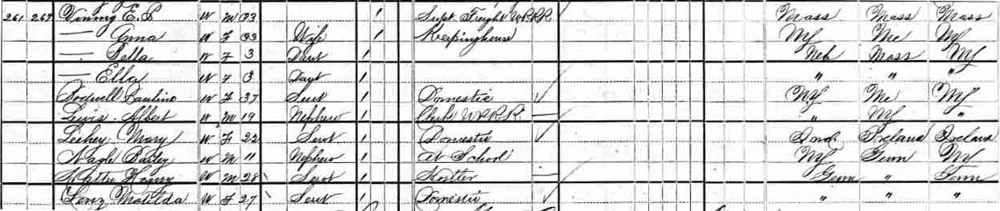
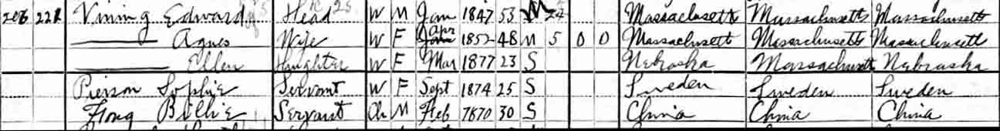
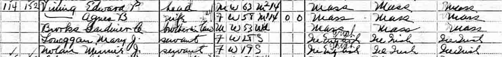
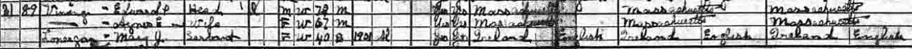
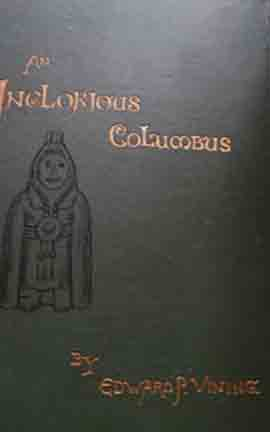
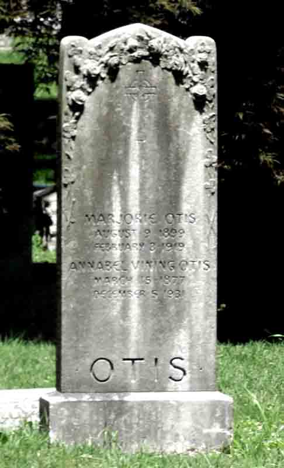

Census Data
| 1880 | 1890 | 1900 | 1910 | 1920 | 1930 | 1940 | |
| Edward Payson Vining | 33 | ? | 53 | 63 | [72?] | dead | |
| Annabel (Bodwell) Vining | 33 | ? | |||||
| Agnes E. (Brooks) Vining | ? | 48 | 58 | 67 | ? | ? | |
| Annabelle Vining | [living? in separate household] | ||||||
| Edward Vining | [living? in separate household] | ||||||
| Annabel Bodwell Vining | 3 | ? | living in separate household | ||||
| Ellen Pauline Vining | 3 | ? | 23 | [living? in separate household] |




Family Data
Photographs of Edward Payson Vining, author of An Inglorious Columbus (book cover shown below with an autograph from one of the copies):
Death Data
Gravestone for Annabel (Vining) Otis, daughter of Edward Payson Vining and Annabel (Bodwell) Vining, in Woodlawn Cemetery, Bronx, Bronx County, New York: